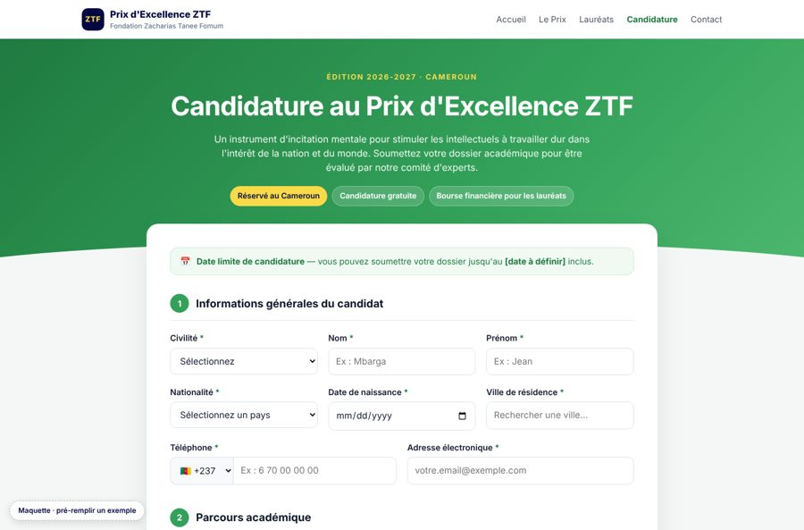
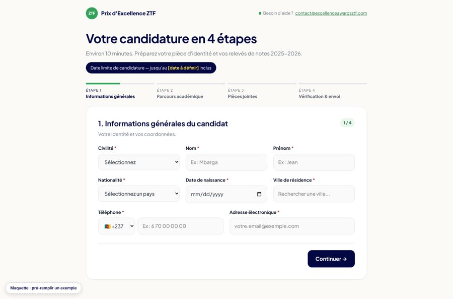
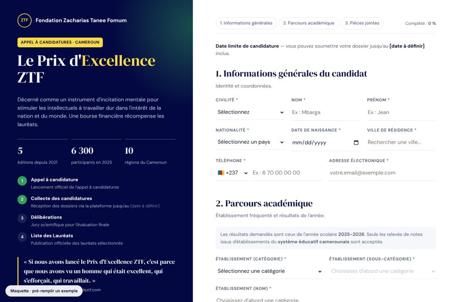
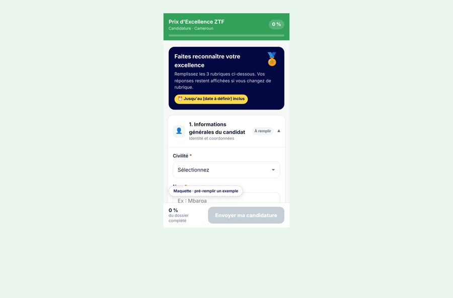
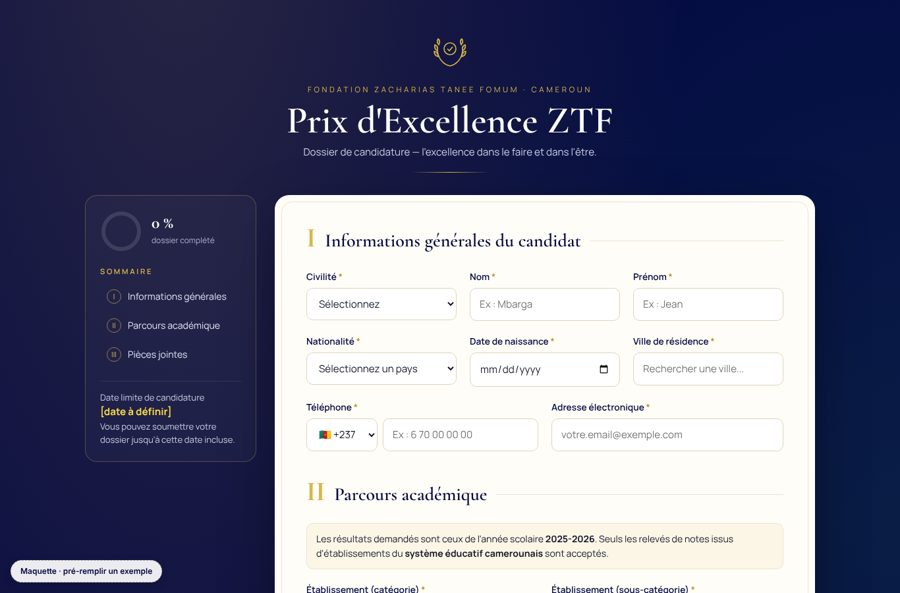

1. Institutionnelle classique
Bandeau vert aux couleurs du site ZTF, carte blanche unique avec les 3 sections numérotées. La plus proche du formulaire de référence, la plus simple à intégrer.

2. Assistant pas-à-pas
4 étapes avec barre de progression, validation à chaque étape et un récapitulatif complet (avec boutons « Modifier ») avant l'envoi définitif.

3. Éditoriale en deux colonnes
À gauche, le prix est présenté (mission, chiffres clés, calendrier, citation) ; à droite, le formulaire, avec un sommaire collant qui suit la progression.

4. Mobile d'abord
Pensée pour les élèves qui candidatent depuis un téléphone : rubriques repliables, grands champs tactiles, barre d'envoi fixe en bas, aucune police à télécharger (page légère).

5. Prestige « cérémonie »
Bleu nuit et or, typographie à empattements, sommaire latéral en chiffres romains avec anneau de progression : l'esprit de la cérémonie de remise des prix.
À savoir pour tester
- Le bouton « Maquette · pré-remplir un exemple » (en bas à gauche) remplit un dossier fictif pour voir le rendu complet.
- L'envoi est simulé : aucune donnée ne quitte le navigateur. Le captcha (Cloudflare Turnstile dans la référence) est représenté par un emplacement.
- Champs dynamiques identiques à la référence : sous-catégorie dépendante de la catégorie, case « Je n'ai pas de notes / moyenne » visible seulement pour Post-BAC+5, cases « Non communiqué », ajout d'un établissement absent de la liste, bouton d'envoi actif seulement après acceptation des CGU.
- La date limite est affichée « [date à définir] » : elle se règle à un seul endroit (
shared/form-data.js).